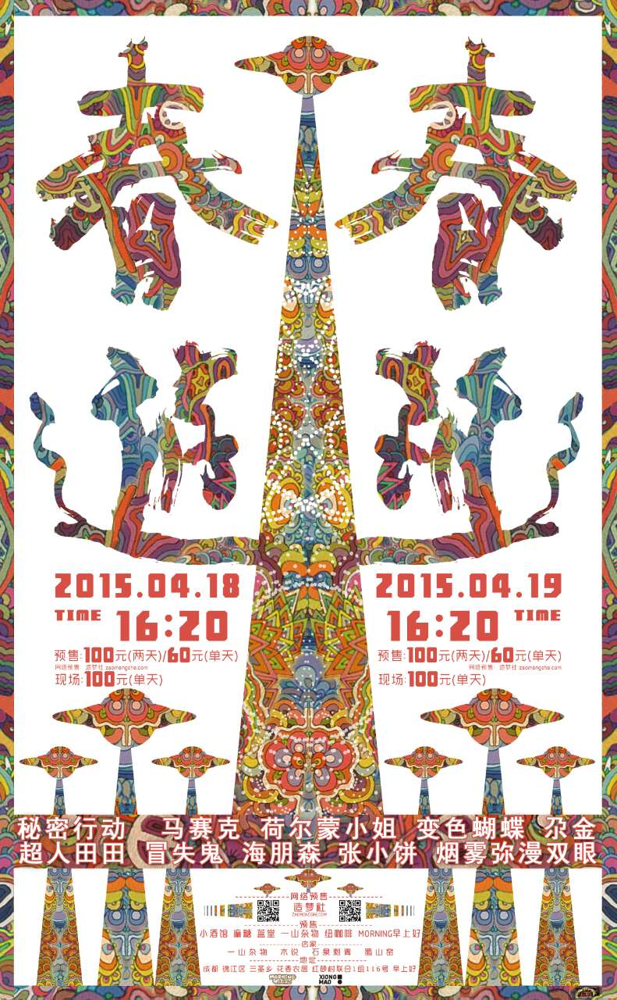

2015
2015年的春游，继续在成都发生。
随着参与者不断增加，春游开始拥有更加清晰的节日形态。 音乐、艺术与城市生活继续在这里交汇。
从最初朋友之间的聚会， 到越来越多陌生人因为音乐来到这里， 春游开始成为一个开放的公共空间。
不同的音乐人、艺术家和观众在这里相遇， 共同构成了属于那个时代的春游记忆。
In 2015, CHUNYOU continued to take place in Chengdu.
As more people became involved, CHUNYOU gradually developed a clearer identity as a festival, bringing music, art and urban life together.
What had started as a gathering among friends was becoming an open public space, where more and more people came together through music.
Musicians, artists and audiences from different backgrounds met here and collectively created the memories that shaped CHUNYOU during this period.